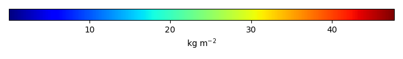
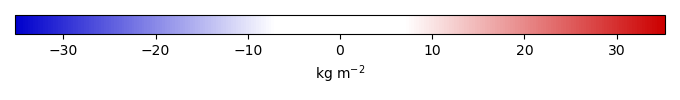
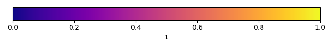

Mean State
Download Data |
Period Mean (original grids) [Pg] |
Model Period Mean (intersection) [Pg] |
Benchmark Period Mean (intersection) [Pg] |
Model Period Mean (complement) [Pg] |
Benchmark Period Mean (complement) [Pg] |
Bias [kg m-2] |
Bias Score [1] |
Spatial Distribution Score [1] |
Overall Score [1] |
|||
|---|---|---|---|---|---|---|---|---|---|---|---|---|
| Benchmark | [-] | 66.5 | ||||||||||
| BASELINE | [-] | 391. | 122. | 60.1 | 269. | 6.47 | 6.43 | 0.384 | 0.357 | 0.370 | ||
| NITROGEN | [-] | 284. | 76.5 | 60.1 | 207. | 6.47 | 1.71 | 0.569 | 0.531 | 0.550 | ||
| NITROGEN-ALPHA7 | [-] | 333. | 90.7 | 60.1 | 242. | 6.47 | 3.19 | 0.506 | 0.429 | 0.468 | ||
| TRENDYv13_S3 | [-] | 352. | 114. | 60.1 | 238. | 6.47 | 5.60 | 0.439 | 0.449 | 0.444 | ||
| TRENDYv14_S3 | [-] | 482. | 157. | 60.1 | 325. | 6.47 | 10.1 | 0.263 | 0.310 | 0.287 |
Temporally integrated period mean


